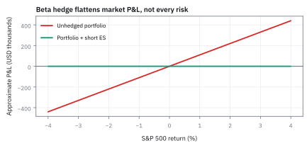
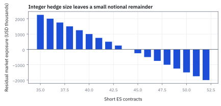
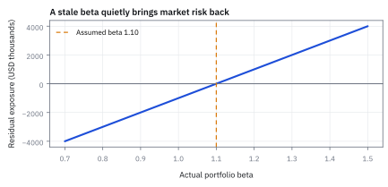
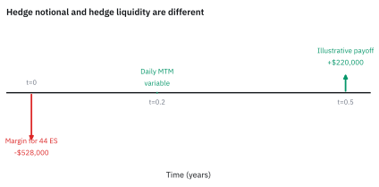

19.3 Hedging with ES Futures
ใช้ beta แปลง portfolio exposure เป็นจำนวนสัญญา แล้ววัดสิ่งที่ hedge ไม่ได้
พอร์ตหุ้น \$10 ล้าน มี beta 1.10 คุณอยากลดความเสี่ยงตลาดหนึ่งสัปดาห์โดยไม่ขายหุ้นสักตัว ES อยู่ที่ 5,000 จุด จุดละ \$50 ต้อง short กี่สัญญา และถ้าตลาดลง 2% จะเหลือกำไรขาดทุนเท่าไร?
เฉลย: short 44 สัญญา เพราะพอร์ตขยับเหมือนดัชนีมูลค่า 1.10 × 10 ล้าน = 11 ล้าน และสัญญาละ 5,000 × 50 = 250,000 ตลาดลง 2% หุ้นเสีย 220,000 futures ได้ 220,000 เหลือศูนย์ แต่ถ้า beta จริงเป็น 1.30 จะเหลือขาดทุน \$40,000
ศัพท์ที่ต้องใช้ก่อนเริ่ม
- hedge
- position ที่เปิดเพื่อลดการเปลี่ยนแปลงของมูลค่า position หลัก ใช้จำกัด market exposure โดยยอมรับว่าความเสี่ยงบางส่วนยังเหลือ
- beta
- ความไวโดยเฉลี่ยของผลตอบแทน portfolio ต่อผลตอบแทนตลาดอ้างอิง ใช้แปลง market exposure เป็นขนาด futures hedge
- portfolio
- กลุ่มสินทรัพย์ที่ถือร่วมกันและวัดมูลค่าเป็นก้อนเดียว ใช้เป็น exposure หลักที่ต้องการลดความเสี่ยง
- futures
- สัญญามาตรฐานในตลาดกลางที่ใช้รับหรือ short market exposure โดยวาง margin และรับ daily mark-to-market
- underlying
- ดัชนีหรือสินทรัพย์ที่สัญญาอ้างอิง ใช้เป็นตัวเทียบว่าการเคลื่อนไหวของ ES สอดคล้องกับ portfolio เพียงใด
- notional
- มูลค่าอ้างอิงเต็มของ futures position คำนวณจากราคาดัชนีคูณ multiplier ใช้เทียบขนาดกับ portfolio USD
- P&L
- กำไรหรือขาดทุนของ position ในช่วงเวลาหนึ่ง ใช้ตรวจว่ากำไรจาก futures ชดเชยการขาดทุนของ portfolio หรือไม่
- basis risk
- ความเสี่ยงที่ portfolio กับ ES เคลื่อนที่ไม่ตรงกันเพราะองค์ประกอบ หุ้น เวลา หรือ beta เปลี่ยน ใช้ประเมิน residual หลัง hedge
- tracking error
- ความผันผวนของผลต่างระหว่างผลตอบแทน portfolio และผลตอบแทนที่ hedge คาดไว้ ใช้วัดคุณภาพ hedge นอกเหนือจากค่าเฉลี่ย
- margin
- เงินหลักประกันของ futures ที่รองรับ daily P&L ใช้จัดการ liquidity ระหว่างถือ hedge
- long
- position ที่ได้ประโยชน์เมื่อราคาหรือดัชนีขึ้น ใช้อธิบาย portfolio หุ้นที่มี market exposure บวก
- short
- position ที่ได้ประโยชน์เมื่อราคาหรือดัชนีลง ใช้เปิด futures hedge ให้สวนทางกับ portfolio long
- volatility
- ความผันผวนของผลตอบแทนรอบค่าเฉลี่ย ใช้ประเมินว่า beta และ hedge P&L อาจคลาดเคลื่อนมากเพียงใด
- systematic risk
- ความเสี่ยงร่วมของทั้งตลาดที่ไม่สามารถกระจายออกได้ ใช้ประเมินส่วนของพอร์ตที่ต้องใช้ futures เข้ามาช่วย hedge
- alpha
- ผลตอบแทนส่วนเกินที่เกิดจากความสามารถในการเลือกหุ้นรายตัว ใช้ประเมินผลงานของผู้จัดการกองทุนแยกจากทิศทางตลาด
สัญกรณ์และหน่วย
| สัญลักษณ์ | ความหมาย | หน่วย |
|---|---|---|
| $V_P$ | มูลค่า portfolio ที่ต้อง hedge | USD |
| $\beta_P$ | beta ของ portfolio ต่อ S&P 500 | ไม่มีหน่วย |
| $F_t$ | ระดับ settlement ของ ES ณ เวลา $t$ | จุด |
| $M$ | ES multiplier | USD ต่อจุดต่อสัญญา |
| $N$ | จำนวน ES contracts; ค่าเป็นลบหมายถึง short | สัญญา |
| $r_P$ | ผลตอบแทนของ portfolio ในช่วงที่วัด | ทศนิยมต่อช่วง |
| $r_M$ | ผลตอบแทนของ market index ในช่วงเดียวกัน | ทศนิยมต่อช่วง |
| $h$ | hedge ratio หรือสัดส่วนมูลค่าสัญญา futures เทียบกับพอร์ต | ไม่มีหน่วย |
| $\rho$ | correlation ระหว่างผลตอบแทนพอร์ตกับสัญญา futures | ไม่มีหน่วย |
| $\sigma_P,\ \sigma_F,\ \sigma_H$ | ความผันผวนของพอร์ต ของ futures และของพอร์ตหลัง hedge | ทศนิยมต่อปี |
| $s_P,\ s_H$ | standard deviation (SD) ของกำไรขาดทุนหนึ่งสัปดาห์ ก่อนและหลัง hedge | USD |
| $E_M$ | มูลค่าที่ขยับเหมือนดัชนี หรือ market exposure | USD |
ที่มาที่ไป: เครื่องมือที่เปลี่ยนการปรับความเสี่ยงให้เป็นเรื่องไม่กี่วินาที
ก่อนมีสัญญาล่วงหน้าบนดัชนี การลดความเสี่ยงตลาดของพอร์ตหุ้นต้องขายหุ้นทีละตัว ซึ่งช้า แพง และทำให้เสียสถานะที่อุตส่าห์เลือกมา
สัญญาล่วงหน้าบนดัชนีเปลี่ยนเรื่องนั้นไปเลย เพราะขายสัญญาไม่กี่ตัวก็ตัดความเสี่ยงตลาดของทั้งพอร์ตได้ โดยไม่ต้องแตะหุ้นที่ถืออยู่
สัญญาขนาดเล็กที่ซื้อขายทางอิเล็กทรอนิกส์ซึ่งเปิดตัวในปี 1997 ทำให้เครื่องมือนี้เข้าถึงได้กว้างขึ้นมาก
แต่ต้องเข้าใจให้ชัดว่ามันตัดได้เฉพาะส่วนที่มาจากตลาดเท่านั้น ความเสี่ยงเฉพาะตัวของหุ้นที่เลือกไว้ยังอยู่ครบ ซึ่งเป็นสิ่งที่เราตั้งใจให้เหลืออยู่แล้ว
จุดกำเนิดทางประวัติศาสตร์: การแยกความเสี่ยงตลาดออกจากฝีมือเลือกหุ้น
ก่อนปี 1982 ผู้จัดการกองทุนหุ้นที่ต้องการลดความเสี่ยงพอร์ตยามตลาดผันผวนมีทางเลือกเพียงสองทาง: ขายหุ้นรายตัวทิ้ง หรือยอมทนขาดทุน
การขายหุ้นสร้างต้นทุนมหาศาล ทั้งค่าคอมมิชชัน bid-ask spread ภาษีกำไร และที่สำคัญคือเสียสิทธิ์ในการถือหุ้นดีที่อุตส่าห์คัดเลือกมา
ในปี 1982 ตลาด Chicago Mercantile Exchange ได้เปิดตัวสัญญาซื้อขายล่วงหน้าบนดัชนี S&P 500 โดยใช้การชำระราคาด้วยเงินสดแทนการส่งมอบหุ้นจริง และต่อมาในปี 1997 ได้เปิดตัวสัญญา E-mini หรือ ES ซึ่งย่อขนาดลงและเทรดผ่านระบบอิเล็กทรอนิกส์
นวัตกรรมนี้เปลี่ยนโลกการลงทุน เพราะทำให้ผู้จัดการกองทุนสามารถแยก market risk หรือ beta ออกจาก stock picking หรือ alpha ได้เป็นครั้งแรก
เพียงส่งคำสั่ง short futures ไม่กี่วินาที พอร์ตหุ้นมูลค่ามหาศาลก็กลายเป็น market-neutral ได้ทันทีโดยไม่ต้องขายหุ้นจริงแม้แต่หุ้นเดียว
ปัญหาคือ market exposure ไม่ใช่จำนวนหุ้น
portfolio $V_P$ ที่มี beta $\beta_P$ ขยับตามตลาดโดยเฉลี่ยราว $\beta_PV_P$ USD ต่อการเปลี่ยนแปลง 100% ของตลาด ตัวอย่างใช้ ES ที่สอนในหัวข้อก่อนหน้าเป็นตัวถ่วง เพราะหนึ่งสัญญาแปลงการขยับของดัชนีเป็น USD ได้ตรง ๆ
สมมติช่วง hedge สั้น, beta คงที่ และของใน portfolio ไม่เปลี่ยน การ hedge นี้ลดส่วนที่ขยับตามตลาด แต่ข่าวเฉพาะหุ้น, dividend mismatch และ basis risk ยังอยู่ ร่มผืนเดียวช่วยทั้งกลุ่มได้ แต่ไม่ได้เปลี่ยนรองเท้าของทุกคน
ขั้นที่ 1 — นิยามของมูลค่าที่ตอบสนองเหมือนดัชนี
บรรทัดนี้เป็น นิยาม ของก้อนที่เราจะไป hedge ไม่ใช่ผลที่พิสูจน์ ความหมายของมันมาจากหัวข้อ 15.2: ค่า beta บอกว่าพอร์ตขยับกี่เปอร์เซ็นต์ เมื่อดัชนีขยับหนึ่งเปอร์เซ็นต์ คูณกับมูลค่าพอร์ตจึงได้จำนวนเงินที่ขยับตามดัชนี ก้อนนี้คือสิ่งเดียวที่ futures บนดัชนีจะชดเชยได้ ส่วนที่เหลือของพอร์ตเป็นความเสี่ยงเฉพาะตัว ซึ่ง hedge ด้วยดัชนีไม่ได้ และจะค้างอยู่ไม่ว่าจะเลือกขนาดเท่าไร
เริ่มจากแบบจำลองเส้นตรงที่แยกผลตอบแทนพอร์ตออกเป็นสามส่วน ส่วนเกิน alpha ความไวตลาด beta และความเสี่ยงเฉพาะตัว
เมื่อคิดการเปลี่ยนแปลงมูลค่าพอร์ตเป็นตัวเงิน พจน์กลางที่ตอบสนองต่อตลาดจะกลายเป็นผลคูณของมูลค่าพอร์ตกับความไวตลาด
ดึงผลตอบแทนตลาดออกมาข้างหลัง ก้อนที่คูณอยู่ข้างหน้าคือจำนวนเงินจริงที่ขยับตามการขึ้นลงของดัชนี
ก้อนนี้คือนิยามของ $E_M$ หรือ market exposure ในหน่วย USD ซึ่งเป็นส่วนเดียวที่ futures บนดัชนีจะเข้าไปชดเชยได้
ขั้นที่ 2 — แปลง exposure เป็นจำนวน ES
สัญญาหนึ่งฉบับมีมูลค่าเท่ากับระดับราคาคูณตัวคูณ ดังนั้นจำนวนฉบับที่สวนทางกับพอร์ตคือ สูตรข้างล่าง ซึ่งเป็นการตั้งสมการให้สองขาหักกันแล้วแก้ครั้งเดียว ไม่ใช่สูตรที่ต้องจำ
ก้อนที่ต้องชดเชยมาจากขั้นที่ 1 ส่วนมูลค่าของสัญญาหนึ่งฉบับคือระดับราคาคูณตัวคูณที่ตลาดกำหนด
เขียนกำไรขาดทุนของสองขาเมื่อดัชนีขยับหนึ่งหน่วย ทั้งคู่เป็นสัดส่วนกับมูลค่าที่ถืออยู่ นั่นคือเหตุผลที่จับให้หักกันได้ แล้วบังคับให้สองขาหักกันหมด
แก้หาจำนวนสัญญา เครื่องหมายลบบอกว่าต้องถือทิศตรงข้ามกับพอร์ต ถ้าพอร์ตเป็นการซื้อ ก็ต้องขาย futures
ข้อควรระวัง ผลนี้ใช้ได้เฉพาะช่วงสั้น เพราะทั้งมูลค่าพอร์ตและระดับ futures เปลี่ยนทุกวัน จำนวนสัญญาจึงต้องปรับตามด้วย ไม่ใช่ตั้งครั้งเดียวแล้วลืม
Worked Example — ต้อง short ES กี่สัญญา
ถาม: portfolio หุ้นมูลค่า \$10,000,000 มี beta 1.10 ถ้า ES อยู่ที่ 5,000 จุดและ multiplier เท่ากับ \$50 ต่อจุด ต้องใช้กี่สัญญาเพื่อลด market exposure?
ของที่มี: portfolio value ใช้บอกขนาดเงิน, beta ใช้บอกว่าตะกร้าขยับแรงกว่าตลาดแค่ไหน และ ES notional ต่อสัญญาได้จากระดับดัชนีคูณ multiplier ใช้ horizon หนึ่งสัปดาห์และปัดเป็นจำนวนสัญญาที่ซื้อขายได้
ขั้นที่ 3 — คำนวณทีละบรรทัด
ขั้นที่ 1 คูณ portfolio value กับ beta เพื่อหา market-dollar exposure ขั้นที่ 2 คูณระดับ ES กับ multiplier เพื่อหา notional ต่อสัญญา ทำทีละหน่วยก่อนจึงไม่เผลอเอา USD ไปหารด้วย index point
คำนวณ market exposure โดยนำ beta 1.10 คูณมูลค่าพอร์ต \$10 ล้าน ได้ \$11 ล้าน
คำนวณ notional ของสัญญา ES หนึ่งฉบับ โดยนำราคา 5,000 จุดคูณตัวคูณ \$50 ต่อจุด ได้ \$250,000
แยกคำนวณสองก้อนนี้ก่อนนำไปหารกัน เพื่อให้หน่วย USD ตัดกันชัดเจนและไม่สับสนกับหน่วยจุดดัชนี
ขั้นที่ 4 — หาร exposure แล้วใส่ทิศทาง
หาร \$11,000,000 ด้วย \$250,000 ต่อสัญญาได้ 44 จากนั้นใส่เครื่องหมายลบ เพราะต้อง short futures มาหักกับ portfolio ที่มี market exposure บวก
หารมูลค่าความเสี่ยงตลาด \$11 ล้าน ด้วยมูลค่าสัญญาละ \$250,000 ได้ขนาด 44 สัญญา
ใส่เครื่องหมายลบเพื่อให้เป็นสถานะ short futures ซึ่งจะทำกำไรเมื่อตลาดลงมาชดเชยการขาดทุนของพอร์ตหุ้น
จำนวนนี้สะท้อนว่าเรา short เกินมูลค่าพอร์ตจริง \$10 ล้าน เพราะหุ้นในพอร์ตแกว่งแรงกว่าตลาด 10%
แล้วเอาไปใช้ทำอะไรได้จริงบ้าง
การใช้สัญญาล่วงหน้าดัชนีป้องกันความเสี่ยงพอร์ตหุ้น เป็นวิธีที่เร็วและถูกที่สุด
ใช้ลดความเสี่ยงตลาดของพอร์ตทั้งกองในคำสั่งเดียว แทนที่จะขายหุ้นทีละตัว
ใช้ปรับความเสี่ยงชั่วคราวระหว่างรอปรับพอร์ตจริง ซึ่งถูกกว่าและเร็วกว่ามาก
ใช้คำนวณจำนวนสัญญาที่ต้องขาย จากมูลค่าพอร์ต ค่าความเกาะตลาด และขนาดของสัญญา
Figure 19.3a — portfolio ก่อนและหลัง hedge

เมื่อ market return ลดลง portfolio ที่มี beta 1.10 จะขาดทุนตามเส้น unhedged ขณะที่ short ES 44 สัญญาชดเชยส่วนใหญ่ ทำให้เส้น hedged แบนลงรอบศูนย์ภายใต้สมมติฐาน beta คงที่
ที่มาของจำนวนสัญญา: ทำให้ความไวรวมเป็นศูนย์
สมมติผลตอบแทน futures เท่ากับผลตอบแทนตลาดในช่วงสั้น จึงดึงผลตอบแทนตลาดออกเป็นตัวคูณร่วมได้ ถ้าต้องการให้ราคาตลาดขยับแล้วกำไรขาดทุนรวมไม่ขยับ ต้องทำวงเล็บให้เป็นศูนย์ ย้าย exposure หุ้นไปอีกข้างแล้วหารด้วย notional ต่อสัญญา จึงได้เครื่องหมายลบและจำนวน 44
ลองเปลี่ยนเพียง beta จริงเป็น 1.30 แต่ยัง short 44 สัญญา หุ้นเสีย \$260,000 เมื่อตลาดลง 2% ขณะที่ futures ยังได้ 220,000 เหลือขาดทุน 40,000 นี่คือวิธีใช้สูตรตรวจ hedge หลังสมมติฐานเปลี่ยน
การพิสูจน์ขั้นลึก: ที่มาของ hedge ratio จากการหาจุดต่ำสุดของ variance
ขั้นนี้ตอบคำถามที่ลึกที่สุดของการ hedge: ทำไมเราต้องใช้ beta และทำไมความเสี่ยงจึงไม่เคยเหลือศูนย์ ตัวเลขที่ใช้คือพอร์ตแกว่งปีละ 22% ดัชนีแกว่ง 18% และสองตัวมี correlation 0.90 ซึ่งให้ beta 1.10 ตรงกับโจทย์
เมื่อเรามองการ hedge เป็นปัญหา optimization เพื่อลดความเสี่ยง ผลลัพธ์ทางคณิตศาสตร์บังคับให้เราเลือกสัดส่วนที่เท่ากับ regression slope หรือ beta
และผลลัพธ์บรรทัดสุดท้ายเปิดเผยความจริงของตลาด: หากพอร์ตของเราไม่ได้ประกอบด้วยหุ้นในดัชนีเป๊ะ ๆ correlation $\rho$ จะน้อยกว่าหนึ่งเสมอ
ส่วนต่าง $1-\rho^2$ คือความเสี่ยงเฉพาะตัวของหุ้น (idiosyncratic risk) ที่ futures บนดัชนีไม่สามารถคุ้มกันได้เลย ไม่ว่าจะคำนวณสัญญาเก่งเพียงใด
เขียนผลตอบแทนของพอร์ตหลัง hedge เป็นผลรวมของผลตอบแทนเดิมบวกผลตอบแทนสัญญา futures ที่ถ่วงด้วยสัดส่วน $h$
กระจาย variance ของผลรวมสองก้อน ได้สมการพาราโบลาหงายในตัวแปร $h$ ซึ่งมีจุดต่ำสุดเพียงจุดเดียว
หา derivative เทียบกับ $h$ แล้วตั้งให้เท่ากับศูนย์เพื่อหาจุดที่ความผันผวนของพอร์ตต่ำที่สุด
แก้หาสัดส่วน $h^*$ ได้ค่า covariance เทียบกับ variance ของ futures ซึ่งตรงกับสูตร regression beta พอดิบพอดี
เมื่อแทนค่า $h^*$ กลับเข้าไป variance ที่เหลืออยู่คือ $\sigma_P^2(1-\rho^2)$ ซึ่งลบไม่ออกตราบใดที่ correlation ไม่เท่ากับหนึ่ง
แทนเลข h* = −1.10 แปลงเป็นจำนวนสัญญาได้ −44 เท่ากับขั้นที่ 4 ความผันผวนต่อปีลดจาก 22% เหลือ 9.59% ในหนึ่งสัปดาห์ SD ของกำไรขาดทุนลดจาก 305,085 เหลือ \$132,984 ส่วนที่เหลือนี้คือความเสี่ยงเฉพาะตัวของหุ้นที่เลือกไว้
ขั้นที่ 5 — ทดสอบ shock ลบ 2%
แทน market return $r_M=-2\%$ เพื่อดูว่าการ hedge ชดเชยตรงไหน
พอร์ตหุ้นขาดทุน \$220,000 เพราะตลาดลดลง 2% และ beta 1.10 ขยายผลกระทบเป็นลบ 2.2%
สัญญา short ES ได้กำไร \$220,000 เพราะตัวคูณ \$50 คูณ 44 สัญญาคูณ 100 จุดที่ลดลง
ผลรวมสองขาหักล้างกันหมดพอดีเป็นศูนย์ ยืนยันว่าความเสี่ยงเชิงเส้นจากตลาดถูกกำจัดอย่างสมบูรณ์
Figure 19.3b — hedge ratio กับ tracking error

ถ้าจำนวนสัญญาน้อยหรือมากเกินไป P&L จะไวต่อ market shock เหลือมากขึ้น จุดใกล้ 44 สัญญาคือบริเวณที่ market exposure หักล้างกัน แต่ไม่ใช่คำรับรองว่า tracking error เป็นศูนย์
beta ไม่ใช่สัญญาณถาวร
beta เป็นค่าเฉลี่ยจากช่วงข้อมูลและ horizon ที่เลือก ถ้าหุ้นใน portfolio เปลี่ยน น้ำหนักเปลี่ยน หรือ volatility regime เปลี่ยน ความไวต่อ S&P 500 อาจไม่เท่าเดิม การ hedge แบบ static จึงควรตรวจ realized beta และ rebalance ตามกติกาที่กำหนดไว้ ไม่ควรไล่เปิดสัญญาตามทุก tick เพราะ transaction cost และ margin จะกลายเป็นความเสี่ยงใหม่
Figure 19.3c — residual risk เมื่อ beta เปลี่ยนแปลง

ถ้า beta จริงเปลี่ยนจาก 1.10 แต่ยังถือ 44 สัญญา residual market exposure จะกลับมา ความเสี่ยงนี้เป็น model risk จากการใช้ beta เก่า ไม่ใช่ความผิดของสูตรจำนวนสัญญา
Figure 19.3d — margin คือ liquidity ไม่ใช่ hedge ratio

notional hedge \$11,000,000 ไม่ได้แปลว่าต้องจ่ายเงินก้อนนั้น แต่ short ES 44 สัญญาต้องวาง margin 44 เท่าของ margin ต่อสัญญาและรับ daily settlement; เงินสดที่ต้องเตรียมจึงเป็นข้อจำกัดของ hedge ที่แยกจาก beta
กับดัก: beta hedge ไม่ได้แปลว่า portfolio ปลอดภัย
beta hedge ชดเชย market component ตามแบบจำลองเฉลี่ย แต่ไม่ได้ชดเชย earnings surprise ของ AAPL, sector tilt, dividend timing, spread, basis หรือ gap ที่ hedge ทำไม่ได้ทัน desk เหมือน short ES ไม่ได้ทำให้ stock pick กลายเป็น Treasury bill; มันแค่ปิดเสียงตลาดบางส่วน
ข้อจำกัด: วิธีนี้สมมติอะไร และของจริงเป็นอย่างไร
| เรื่อง | วิธีนี้สมมติว่า | ของจริงเป็นอย่างไร | ผลที่ตามมาเวลาใช้งาน |
|---|---|---|---|
| ค่าความเกาะตลาด | รู้ค่าที่ถูกต้อง | ประมาณมาและเปลี่ยนตามเวลา | จำนวนสัญญาที่คำนวณได้ผิดไปได้ และความเสี่ยงที่เหลือมากกว่าที่คิด |
| ความตรงของดัชนี | พอร์ตเคลื่อนไหวตามดัชนี | พอร์ตมีความเสี่ยงเฉพาะตัวที่ดัชนีไม่มี | ป้องกันได้เฉพาะส่วนที่มาจากตลาด ส่วนที่เหลือยังอยู่ครบ |
| จำนวนเต็ม | ขายได้ตามจำนวนที่คำนวณ | สัญญาซื้อขายเป็นจำนวนเต็ม | ต้องปัด และการปัดทิ้งความเสี่ยงไว้บางส่วน โดยเฉพาะพอร์ตขนาดเล็ก |
แถวกลางเป็นสิ่งที่ต้องอธิบายให้ชัดตั้งแต่ต้น การป้องกันแบบนี้ไม่ได้ทำให้ความเสี่ยงเป็นศูนย์
คำตอบ — ต้อง short ES กี่สัญญา
คำถาม: พอร์ตหุ้นมูลค่า \$10,000,000 มีค่า beta เท่ากับ 1.10 ต้องการ hedge ความเสี่ยงตลาดชั่วคราวด้วยสัญญา ES ที่ระดับ 5,000 จุดและ multiplier \$50 ต่อจุด ต้องเปิดสถานะกี่สัญญา?
ของที่มี: ขั้นที่ 3 ถึง 5 กับมูลค่าพอร์ต \$10 ล้าน ค่า beta 1.10 และมูลค่าสัญญา ES ละ \$250,000
1 มูลค่าความเสี่ยงตลาดที่ต้องชดเชยคือ 1.10 × 10,000,000 = \$11,000,000
2 ต้องเปิดสถานะ short ES จำนวน 11,000,000/250,000 = 44 สัญญา
3 เมื่อตลาดลดลง 2% กำไรจาก futures \$220,000 หักล้างการขาดทุนของพอร์ตได้พอดี แต่ความเสี่ยงเฉพาะตัวยังเหลือ SD ราว \$133,000 ต่อสัปดาห์
ตรวจเองใน 10 วินาที: คำนวณ 44 คูณ 250,000 ได้ \$11,000,000 พอดี และตรวจสอบว่าจำนวนสัญญาต้อง short เกินมูลค่าพอร์ต 10% ตามค่า beta ที่มากกว่าหนึ่ง
แปลว่าอะไรบนโต๊ะเทรด: การ hedge ด้วย futures ดัชนีช่วยกำจัดเฉพาะ market risk เท่านั้น ความเสี่ยงเฉพาะตัวของหุ้นรายตัวยังคงอยู่ตามสัดส่วน $1 - \rho^2$ จึงไม่ใช่พอร์ตที่ไร้ความเสี่ยงอย่างสิ้นเชิง
โค้ดตรวจการคำนวณ hedge ratio และผลกระทบต่อพอร์ต
import numpy as np
# Portfolio and market parameters
v_portfolio = 10_000_000.0
beta_p = 1.10
f_index = 5000.0
multiplier = 50.0
# 1. Market exposure and contract sizing
e_market = beta_p * v_portfolio
contract_notional = f_index * multiplier
n_star = -e_market / contract_notional
assert np.isclose(e_market, 11_000_000.0)
assert np.isclose(contract_notional, 250_000.0)
assert np.isclose(n_star, -44.0)
# 2. Shock scenario: market drops 2%
market_shock = -0.02
delta_p = v_portfolio * beta_p * market_shock
delta_f = n_star * multiplier * (f_index * market_shock)
net_pnl = delta_p + delta_f
assert np.isclose(delta_p, -220_000.0)
assert np.isclose(delta_f, +220_000.0)
assert np.isclose(net_pnl, 0.0)
# 3. Minimum variance hedge formula check
sigma_p = 0.22
sigma_f = 0.18
rho = 0.90
cov_pf = rho * sigma_p * sigma_f
var_f = sigma_f ** 2
h_star = -cov_pf / var_f
var_residual = (sigma_p ** 2) * (1.0 - rho ** 2)
assert np.isclose(h_star, -beta_p) # the regression beta
assert np.isclose(h_star * v_portfolio / contract_notional, n_star) # -44 contracts
assert np.isclose(np.sqrt(var_residual), 0.0959, atol=5e-5)
assert np.isclose(v_portfolio * sigma_p / np.sqrt(52), 305_085, atol=1)
assert np.isclose(v_portfolio * np.sqrt(var_residual) / np.sqrt(52), 132_984, atol=1)
# the parabola really bottoms out at h_star
hs = np.linspace(-2, 0, 2001)
var_h = sigma_p**2 + 2 * hs * cov_pf + hs**2 * var_f
assert abs(hs[np.argmin(var_h)] - h_star) < 1e-3
# 4. beta was really 1.30 but we still hold 44 contracts
assert np.isclose((1.30 * v_portfolio + n_star * contract_notional) * market_shock, -40_000)
print("Hedging calculations verified successfully!")สคริปต์นี้ยืนยันว่าการคำนวณ market exposure \$11 ล้าน ต้องใช้ short ES 44 สัญญา และกำไรขาดทุนสุทธิเป็นศูนย์เมื่อตลาดเกิด shock 2%
สรุปที่ใช้ได้จริง
- จำนวนสัญญา hedge ที่เหมาะสมคือ $N^* = -\beta_P V_P / (M F_t)$ โดยเครื่องหมายลบหมายถึงการ short เพื่อคุ้มกันพอร์ต long
- สำหรับพอร์ต \$10 ล้าน ที่ beta 1.10 และสัญญา ES ละ \$250,000 ต้อง short 44 สัญญา คิดเป็น exposure \$11 ล้าน
- เมื่อตลาดลดลง 2% กำไรจาก futures \$220,000 จะชดเชยการขาดทุนของพอร์ต \$220,000 ได้พอดีตามแบบจำลองเชิงเส้น
- minimum variance hedge ratio สอดคล้องกับค่า regression beta โดยเหลือความเสี่ยงตกค้างเท่ากับ $\sigma_P^2(1 - \rho^2)$
- beta hedge กำจัดได้เฉพาะ systematic market risk แต่ไม่สามารถลบความเสี่ยงเฉพาะตัวของหุ้นและ basis risk ได้